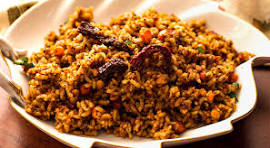

home
puliyogare

DESCRIPTION
A South Indian tamarind rice dish, tangy and spicy, made with tamarind paste, sesame seeds, jaggery, and tempered spices.
INGREDIENTS
- 2 cups cooked rice
- 3 tbsp tamarind paste
- 1 tbsp jaggery (optional)
- 2 tbsp oil
- 1 tsp mustard seeds
- 1 tsp urad dal
- 1 tsp chana dal
- 2 tbsp peanuts
- 2 dried red chilies
- 1 sprig curry leaves
- ½ tsp turmeric powder
- 1 tsp sesame seeds, roasted and ground
- 1 tsp puliyogare spice mix (optional)
- Salt to taste
STEPS
- Cook rice and allow it to cool.
- Heat oil in a pan and add mustard seeds, urad dal, chana dal, and peanuts.
- Add dried red chilies and curry leaves, and sauté for a few seconds.
- Pour in the tamarind paste, jaggery, turmeric, and salt. Cook until thick.
- Add the roasted sesame powder and mix well.
- Mix the tamarind sauce with the cooled rice and combine thoroughly.
- Let it sit for a few minutes for flavors to blend before serving.